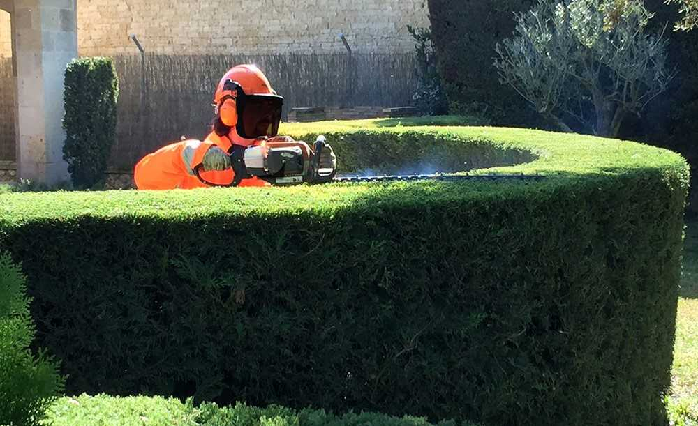
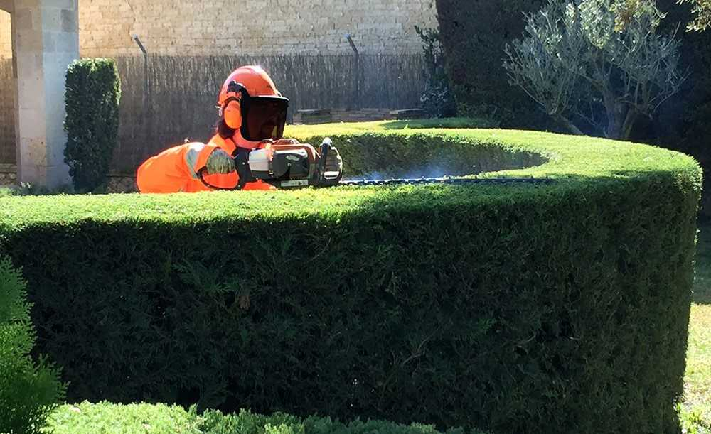

BIOFORESTVG
BIOFORESTVG
PODAS, TALAS Y DESBROCES
Nuestros profesionales ofrecen servicios de podas y talas de árboles en Jaca, Huesca, Zaragoza, Lleida y Pamplona. Contamos con un equipo experimentado en desbroces de árboles y de mantenimiento de setos y jardines.
 



Ofrecemos servicios profesionales de mantenimiento de setos y jardines para mantener tus espacios verdes en óptimas condiciones.
Nuestro equipo capacitado se encarga de podar setos, cuidar el césped y mantener tus áreas verdes hermosas y saludables.